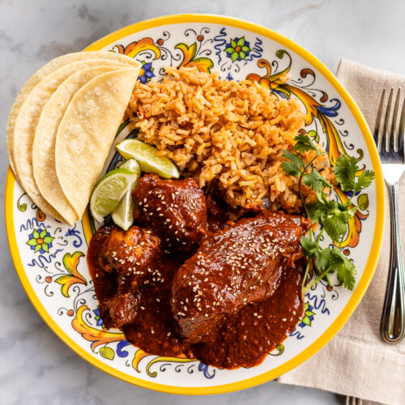

Mexican Chicken Mole Recipe

Description
Mexican Mole Sauce is made with layers of complex and bold flavors,
simmered together over a long period of time before being blended until
smooth. Learn how to make this delicious chicken mole and serve with warm
rice, beans, wrapped in tortillas, or drizzled over your favorite tacos,
nachos, and veggies.
Comforting, complex, and extremely versatile, Mole (pronounced moh-lay) is
one of my very favorite Mexican cuisine classics. A labor of love to
prepare, making your own homemade mole sauce is a million times worth the
effort.
This recipe, while not 100 percent traditional, isn’t exactly fast and
easy either. While one may expect to spend at least a day, if not days, to
make the most traditional and authentic mole, you can expect to spend
approximately 2 to 3 hours to get this awesome chicken mole recipe ready
and on the table for you and your family to enjoy.
Aside from chicken, leftover mole sauce tastes fantastic with tostadas,
chicken or veggie enchiladas, tacos, and burritos.
Ingredients
- 8 cups water
- 2 tablespoons kosher salt, divided
- 4 bone-in, skin-on chicken quarters (about 3 1/4 pounds)
- 3 3/4 cups vegetable oil, divided
- 12 garlic cloves, divided
- 4 1/2 cups diced plum tomatoes
- 3 1/2 cups diced yellow onion
- 8 dried guajillo chiles (1 3/4 ounces), stemmed
- 6 dried chiles de árbol (1/8 ounce), stemmed
- 4 dried ancho chiles (2 1/2 ounces), stemmed
- 3 dried pasilla negro chiles (3/4 ounce), stemmed
- 2 dried mulato chiles (1 ounce), stemmed
- 1/2 cup sesame seeds, plus more for garnish
- 1/2 cup pepitas
- 3 (6-inch) corn tortillas, plus more for serving
-
1 (3 1/2-ounce) bolillo or demi baguette, torn into pieces (about 5 1/2
cups)
-
1 (about 3-ounce) Mexican chocolate disk (such as Dandelion or Ibarra)
- Cooked long-grain white rice, for serving
Steps
-
Bring 8 cups of water and 1/2 tablespoon of salt to a boil in a large
stockpot over high. Reduce heat to medium-low and add chicken. Cook
until the chicken is tender and a thermometer inserted in the thickest
portion of the meat registers 155°F, about 30 minutes. Remove chicken;
set aside on a large plate. Reserve 4 cups of the chicken cooking liquid
in a large heatproof bowl; discard remaining cooking liquid.
-
Heat 1/4 cup vegetable oil in a 12-inch skillet over medium-high. Add 8
garlic cloves; cook, stirring constantly, until fragrant, about 1
minute. Add tomatoes, onions, and 1/2 tablespoon salt; cook, stirring
occasionally, until onions are translucent and softened, about 8
minutes. Transfer mixture to a blender. Secure lid on blender and remove
center piece to allow steam to escape. Place a kitchen towel over
opening on lid. Process until smooth, about 1 minute. Transfer mixture
to a large bowl and set aside.
-
Wipe skillet clean. Add 3 cups vegetable oil; heat over medium-high.
Working with a few different types of chiles at a time, place in a
spider and submerge in hot oil for 2 seconds per batch. Remove from oil
using spider and place in a large heat-proof bowl. Repeat with remaining
chiles and remaining four garlic cloves.
-
Place sesame seeds and pepitas in a medium metal strainer; submerge in
hot oil in skillet over medium-high. Cook, stirring mixture inside
strainer and shaking occasionally, until seeds are golden brown and
fragrant, about 2 minutes. Transfer seed mixture to bowl with chile
mixture.
-
Working with one tortilla at a time, add to hot oil in skillet over
medium-high. Cook, turning occasionally, until golden brown, 30 seconds
to 1 minute. Transfer fried tortillas to a plate lined with paper
towels; let cool 5 minutes. Break into 2-inch pieces. (Strained and
cooled oil may be reused for frying.)
-
Add chile mixture, tortilla pieces, and bolillo pieces to reserved 4
cups chicken cooking liquid in bowl. Let stand until liquid is almost
absorbed and bolillo has softened, about 10 minutes. Transfer mixture to
a blender; process until smooth, about 1 minute.
-
Heat remaining 1/2 cup vegetable oil in a large pot over medium. Add
tomato mixture; cook, stirring constantly, until heated through, about 1
minute. Add blended chile mixture and chocolate disk. Bring to a simmer
over medium-high. Cook, stirring occasionally, until chocolate has
melted and mixture is well combined, about 20 minutes. Add cooked
chicken and remaining 1 tablespoon salt; stir to submerge in mole.
Reduce heat to medium-low; cover and simmer until chicken is heated
through, 10 to 15 minutes. Serve with rice and tortillas; garnish with
additional sesame seeds.